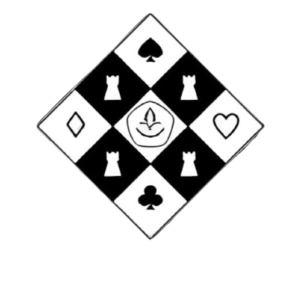
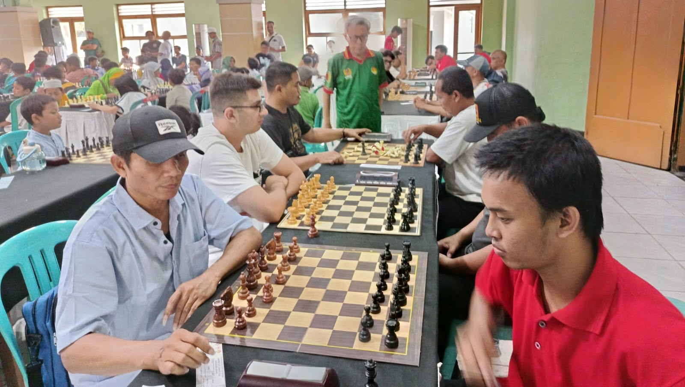

Beranda > Tentang Kami
Tentang Kami
Informasi lebih lanjut tentang UKM-O Catur & Bridge

FILOSOFI LOGO
- Logo Catur & Bridge Polije.
Menggambarkan perpaduan dua olahraga pikiran yang sama-sama menuntut strategi, ketelitian, dan sportivitas. - Papan catur hitam-putih yang disusun dalam bentuk belah ketupat.
melambangkan keseimbangan dan kemampuan melihat persoalan dari berbagai sudut. - Bidak benteng.
Melambangkan keteguhan dan ketegasan dalam mengambil keputusan. - Empat simbol kartu bridge (sekop, wajik, hati, dan keriting).
Melambangkan kerja sama tim, komunikasi, dan kemampuan membaca situasi. - Lambang Polije di pusat logo.
Menegaskan bahwa seluruh prestasi dan kegiatan unit ini berpijak pada identitas dan nilai-nilai kampus.
Arti dari semua logo ini mencerminkan semangat berpikir strategis, bermain jujur, dan berkembang bersama.
VISI& MISI
👁 VISI
Menjadi UKM yang unggul dalam prestasi, berkarakter,
dan berdaya saing di bidang catur dan bridge.
𖣠 MISI
- ♞Mengembangkan kemampuan anggota.
- ♟Meningkatkan prestasi di tingkat regional maupun nasional.
- ♛Menjalin hubungan baik antar anggota dan komunitas.
SEJARAH UKM-O CATUR & BRIDGE
pada suatu hari di politekni negeri jembeer hadir magnus carlsen untuk latih tanding bersama salah satu
mahasiswa polije dan pada saat itu mahasiswa tersebut berhasil mengalahkan magnus oleh karena itu
magnus mengusulkan untuk membuat ukm catur agar banyak dari mahasiswa polije yang mengasah
skikll caturnya sejak saat itu ukmo catur berdiri "TAMAT"
